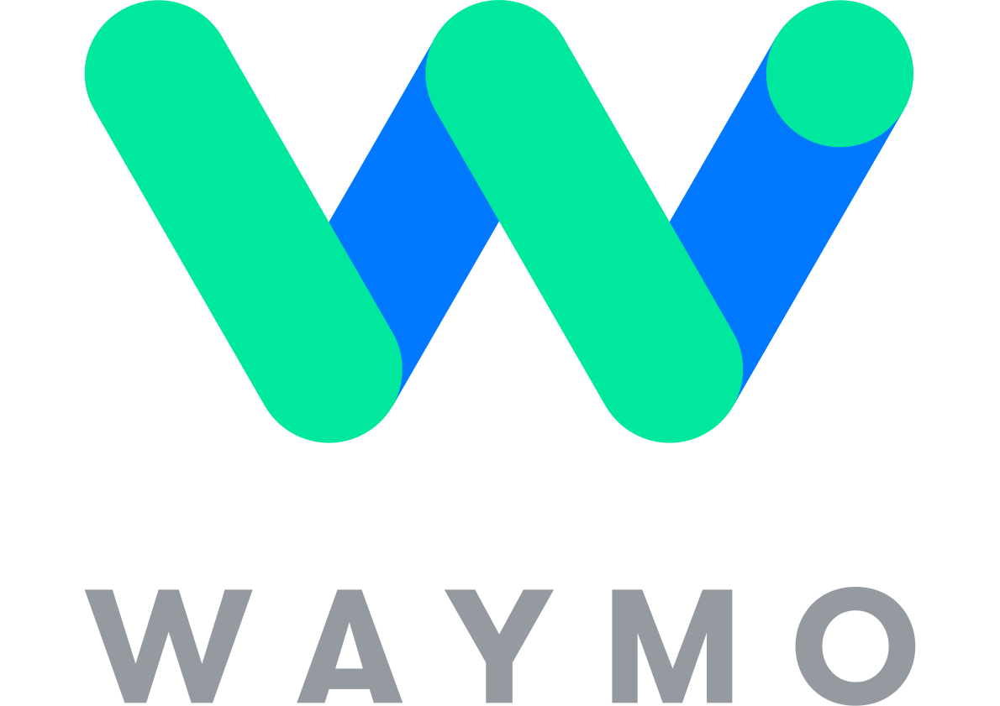

Yunbei Zhang
Final-year Ph.D. CandidateI work on safe, adaptive, and self-evolving AI: world models and physical AI for multimodal and embodied reasoning, the safety and reliability of frontier models and agents, and efficient adaptation under distribution shift, limited compute, and black-box access.
I recently completed a research internship at
![]() Waymo, after internships at
Waymo, after internships at
 Amazon,
Amazon,
![]() Oak Ridge National Laboratory, and
Oak Ridge National Laboratory, and
 KLA.
I studied mathematics at Osaka University and Peking University.
KLA.
I studied mathematics at Osaka University and Peking University.
Open to research internships and collaborations: yunbeizhang.ml [at] gmail.com
Selected work
Publications
Full list on Google ScholarIn the Media
Background
Experience

Waymo · Research Intern, Planning & Safety2026- Oak Ridge National Lab · Research Intern, Foundation Models2026
- Amazon · Applied Scientist Intern, MLLM Safety2025
- KLA · ML Research Intern, Visual Foundation Models2025
Education
![Tulane University]() Tulane University · Ph.D., Computer Science2022 – now
Tulane University · Ph.D., Computer Science2022 – now Osaka University · B.S., Mathematics2018 – 2022
Osaka University · B.S., Mathematics2018 – 2022![Peking University]() Peking University · Undergraduate dropout2013 – 2015
Peking University · Undergraduate dropout2013 – 2015
Honors
- Best Paper AwardICLR’26 Test-Time Updates Workshop2026
- Best Short Paper AwardICLR’26 Agents in the Wild Workshop2026
- Tinker Research Grant, Thinking Machines Lab2026
- Lambda Research Grant2025
- Outstanding TA Award, Tulane2024
- Award of Excellence, Osaka University2019
- Honors Scholarship, MEXT Japan2018, 2021
Service
- Top ReviewerNeurIPS’252025
- Gold ReviewerICML’262026
- Reviewer for NeurIPS, ICLR, ICML, CVPR, ECCV, ACM MM, and TMLR